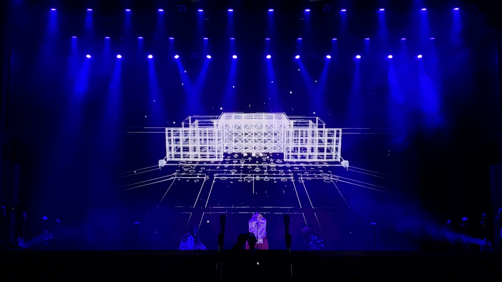
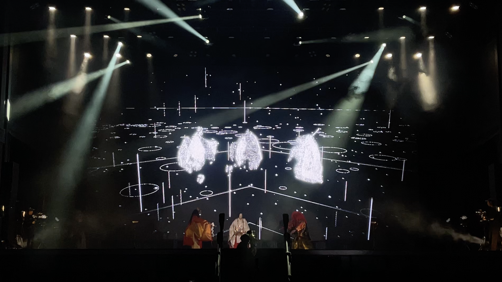
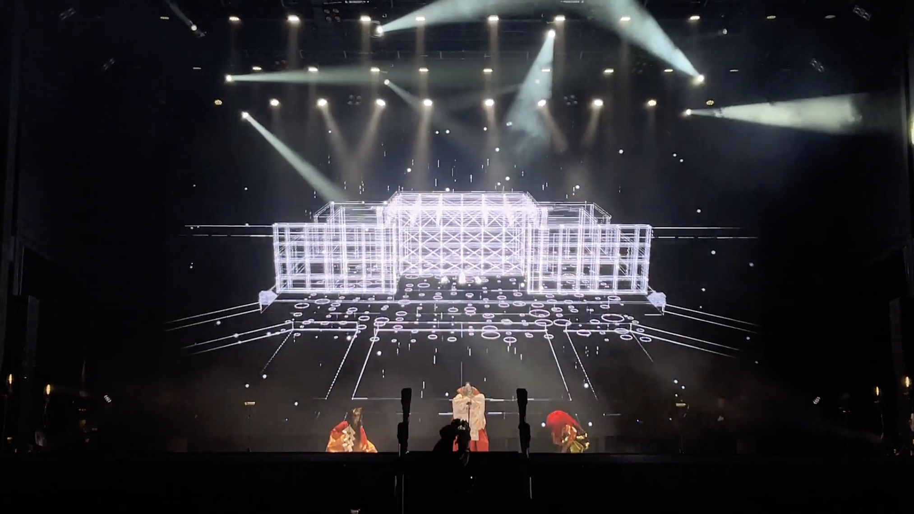

Visual Programming and Software Engineering for
FUTURE 能-NOH STAGE at Expo 2025 Osaka, Kansai, Japan



| Software engineering for「 FUTURE 能-NOH STAGE 不二之舞 大和に神、集いて」
at Expo 2025, Osaka, kansai. Staff Credit: Visual Direction, Sound Effect : Daito Manabe (Studio Daito Manabe, Rhizomatiks) Technical Direction, Software Engineering, Production Management : 2bit Visual Programming, Software Engineering : Sogen Handa,Keigo Yoshida, Yuta Okuyama (Studio Daito Manabe) Stage Technician, Technical Support : Kosaku Namikawa (7ild3) CG Team : Masahiro Kadokawa, Ponta Arahiki, Satoki Shinozaki (CuddysPic) Production Support : Keke (Rhizomatiks, Studio Daito Manabe) Project Management, Produce : Takao Inoue (Rhizomatiks, Studio Daito Manabe) ツレ：金剛龍謹、ツレ：宇髙竜成 |